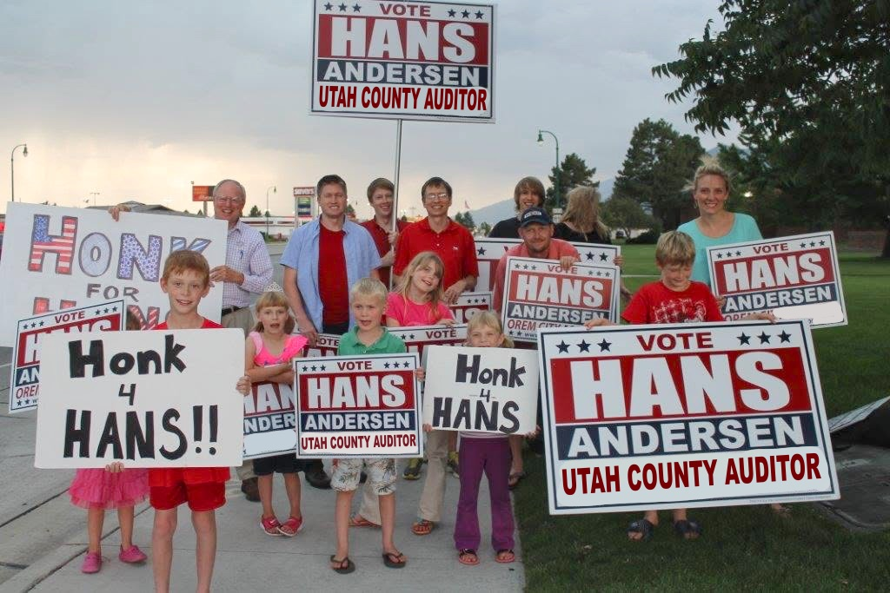

Most candidates tell you what they would do. Hans can show you what he has already done — on the Orem City Council and as a private citizen who refused to look away.
On the council, Hans was the member who read every line of the budget and asked the questions others wouldn't. He voted against tax increases, against new debt, and for treating every Orem business equally.
When Orem homeowners faced a property tax increase to bail out the UTOPIA fiber network, Hans organized the opposition and stopped it. Millions in taxes were never levied because one accountant did the math out loud.
Hans exposed a plan that would have doubled Orem residents' utility rates, and called out the city's "shell game" with water storage funds — moving money in ways that obscured what residents were really paying for.
When a local family's pumpkin farm ran afoul of city hall, Hans took the farmer's side and won. For Hans, protecting farmers and families from overreach isn't a talking point — he's lived it on his own orchard.
Hans filed open-records requests — waiting four months and paying nearly $500 of his own money — to obtain city emails. He took the evidence that public resources were used for political campaigning to the Utah County Clerk-Auditor, citing Utah Code 20A-11-1203, and triggered an investigation.
Hans opposed Proposition 1, arguing it wasn't about local transportation needs but about increasing taxpayer subsidization of the Utah Transit Authority — and made sure voters heard the other side of the story.
Being a watchdog doesn't mean being against everything. Hans supported the SCERA and the traditions that make Orem a family town — because good stewardship means funding what matters and cutting what doesn't.
"It took four months for them to get me that information. And they charged me nearly $500 for it."
— Hans Andersen, on fighting for public records that should have been public
Everything above, Hans did as a volunteer — a citizen with a calculator, a records request, and a conscience. The County Auditor's office comes with the authority, the staff, and the standing to do it county-wide. That's the job he's asking you to hire him for.